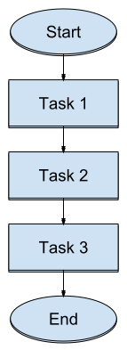
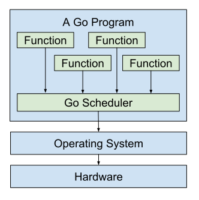

What even is concurrency??
Hi, I'm Jacob!
@jcbwlkr on Twitter
Community Engineer at
A Serial Program
A Concurrent Program

“Concurrency is about dealing with lots of things at once.
Parallelism is about doing lots of things at once.”- Rob Pike in Concurrency is not Parallelism.
The OS, CPU, and Threads
Thread States
Source: http://journals.ecs.soton.ac.uk/java/tutorial/java/threads/states.html
Facts
- Concurrency is hard.
The Go Scheduler
The Go Scheduler
Facts
- Concurrency is hard.
- Go makes concurrency easier.
- Concurrency is still not easy.
Goroutines
func main() {
go sing("Jacob", 3)
sing("Anna", 3)
}
⚠️ Dangers of Concurrency⚠️
- Work can be incomplete.
WaitGroups
func main() {
var wg sync.WaitGroup
wg.Add(1)
go func() {
sing("Jacob", 3)
wg.Done()
}()
sing("Anna", 3)
wg.Wait()
}
Shared Memory
const workers = 2
var counter int
func main() {
var wg sync.WaitGroup
wg.Add(workers)
for i := 0; i < workers; i++ {
go func() {
for i := 0; i < 2; i++ {
counter++
}
wg.Done()
}()
}
wg.Wait()
fmt.Println("Final counter", counter)
}
⚠️ Dangers of Concurrency⚠️
- Work can be incomplete.
- Data can get corrupted.
Mutexes
const workers = 2000
var counter int
var mu sync.Mutex
func main() {
var wg sync.WaitGroup
wg.Add(workers)
for i := 0; i < workers; i++ {
go func() {
for i := 0; i < 2; i++ {
mu.Lock()
counter++
mu.Unlock()
}
wg.Done()
}()
}
wg.Wait()
fmt.Println("Final counter", counter)
}
CSP
Communicating Sequential Processes
Described in 1978 by Tony Hoare
A Proverb
Don't communicate by sharing memory,
share memory by communicating.
Channels
func main() {
input := make(chan int)
output := make(chan int)
go func() {
n := <-input
n = n * 3
output <- n
}()
input <- 14
answer := <-output
fmt.Println("Final answer", answer)
}
Select
ch := make(chan string)
// Some code...
timeout := time.After(100 * time.Millisecond)
select {
case val := <-ch:
fmt.Println("Worker gave me:", val)
case <-timeout:
fmt.Println("Took too long! Moving on!")
}
⚠️ Dangers of Concurrency⚠️
- Work can be incomplete.
- Data can get corrupted.
- Resources can get leaked.
Random Number Generators
⚠️ Dangers of Concurrency⚠️
- Work can be incomplete.
- Data can get corrupted.
- Resources can get leaked.
- Code can become too complex.
Additional Reading
- Cancellation.
- Pipelines.
- Concurrency patterns.
- Fan out, Fan In.
- Workers, Feeders.
- Error Handling.
- More.
Takeaways
- If serial code is fast enough... you're done!
- Some problems are well suited for concurrency.
- Some aren't.
- Concurrency is hard.
- Go makes concurrency easier.
- Beware the dangers.